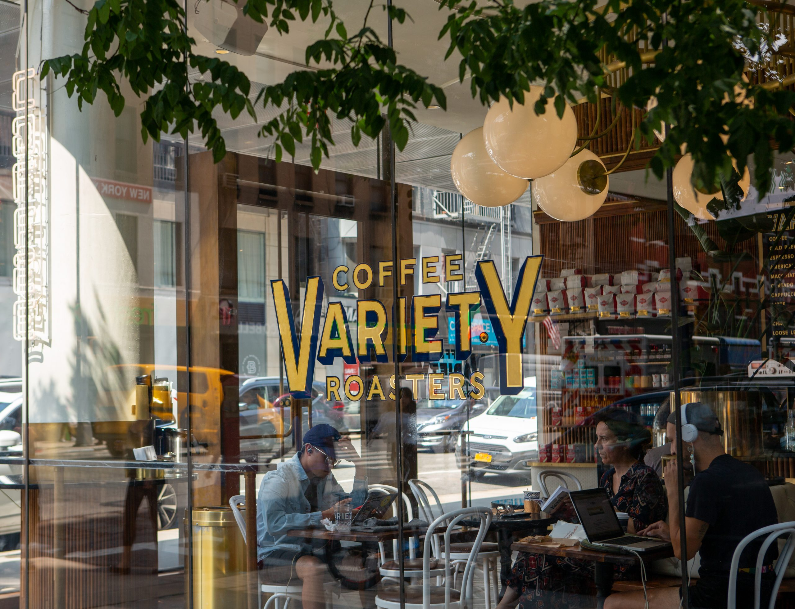
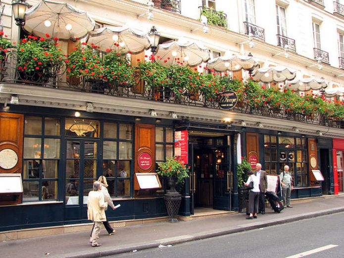
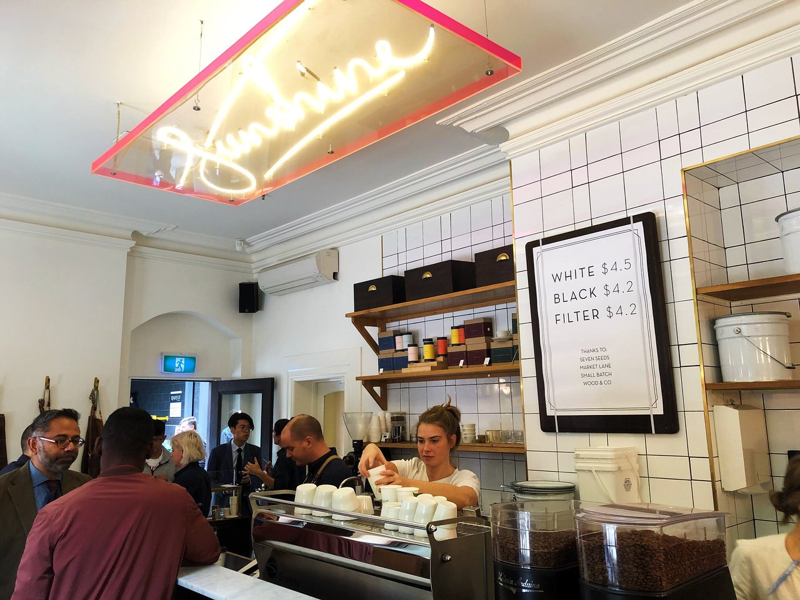
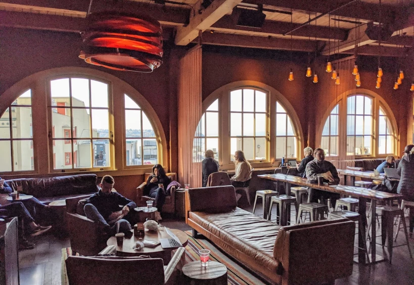

New York City remains at the forefront of the latest specialty coffee trends due to its innovative cafes, exceptional roasting scenes, and advanced brewing methods. The city has played a vital role in shaping the coffee culture in America. New York City is often referred to as “The City That Never Sleeps”, and its diverse selection of coffee shops guarantees that.
Variety Coffee Roasters is a popular coffee shop located on the Upper East Side of New York City. The coffee brand sources fresh and high-quality coffee beans to guarantee the finest-quality coffee. Variety Coffee Roasters is famously known for their nutty and chocolatey roasts. They have a curated menu that reflects the type of beans grown in different coffee-growing regions.
Address: 261 7th Ave, New York, NY 10001, United States
Mokafé Coffee House is a specialty coffee shop that serves coffee imported from Yemen and Guatemala. The brand sources its coffee beans directly from small farms in Guatemala and Yeman. Mokafé Coffee House strives to introduce its customers to unique flavor notes, aromas, and textures, as they are known for their bright and fruity roasts. They strive to create unique and therapeutic coffee experiences that promote the well-being and productivity of their customers.
Address: 1059 Manhattan Ave, Brooklyn, NY 11222, United States
Coffee culture is deeply ingrained in Paris’s identity. It serves as a social lubricant by fostering and deepening social connections. French coffee refers to a style of consuming and preparing coffee rather than a particular type of coffee. It is an immersive experience that focuses on the ambiance of the coffee shop and the ritual of drinking coffee. Taking the time to slow down and pay attention to your drink is said to enhance the overall coffee experience.
Le Procope, formerly known as Café Procope, is the oldest operating and most established café in Paris. Its founding dates back to 1686 and is largely credited for the creation of Parisian café culture. Le Procope was the first restaurant in Paris to offer coffee by table service in a porcelain cup. The restaurant is decorated with historical art pieces to convey the vibrant atmosphere of Paris in the 18th century.
Address: 13 Rue de l'Ancienne Comédie, 75006 Paris, France
Le Peloton Café is a specialty café that is owned by the founders of Bike About Tours, a tour agency in Paris that allows tourists to explore the city through cycling. Le Peloton Café was founded with the intent to cultivate an authentic community, allowing individuals to form connections and bond over their passions for coffee and cycling. It serves as a hub for the cycling community, allowing them to gather and build meaningful connections.
Address: 17 Rue du Pont Louis-Philippe, 75004 Paris, France
Melbourne has a vibrant coffee culture and thriving cafe scene, earning its reputation as one of the world’s top coffee destinations. Cafes in Melbourne foster a sense of belonging and community. The city is recognized as a capital of coffee culture that emphasizes quality and innovation. Melbourne’s coffee culture pays homage to classic coffee beverages while also innovating new coffee styles. Melbourne’s roasters and baristas are highly accomplished and innovative, creating rich blends and offering a wide selection of brewing methods.
Patricia Coffee Brewers is an aesthetically appealing and high-quality coffee shop located in the heart of Melbourne. Their menu keeps things simple, offering white, black, or filtered coffee. Customers can order their coffee either hot or iced. A limited menu is used to simplify the options as much as possible and make the ordering process more streamlined. Patricia Coffee Brewers also guarantees exceptional customer experience as the baristas take the time to interact with every customer.
Address: Rear of, 493-495 Little Bourke St, Melbourne VIC 3000, Australia
Little Rogue is a beloved coffee destination for locals and tourists, renowned for their exceptional coffee and pastries. It is a hidden gem that is located in the streets of Drewery Lane. They source their pastries from Bakemono Bakers, an outstanding bakery located across the street. Little Rogue has a cozy atmosphere that fosters a sense of belonging and makes you feel right at home.
Address: 12 Drewery Ln, Melbourne VIC 3000, Australia
Seattle is known as the “Coffee Capital of the United States” due to its coffee consumption and historical ties to Starbucks. The brand opened its first store in Pike Place Market, in Seattle, in 1971, making it the birthplace of Starbucks. Today, the city remains a thriving coffee capital, known for its vibrant and diverse coffee culture, with a wide selection of coffee shops. Seattle offers a diverse range of coffee experiences catering to all preferences, ranging from cozy local cafes to trendy artisan roasters. The city is home to a variety of unique coffee shops and roasteries, each with its approach to preparing and serving coffee.
Storyville Coffee Company is one of the top coffee shops in Seattle and roasters in the United States. They are committed to fostering exceptional coffee experiences and take pride in perfecting their products. Storyville Coffee at Pike Place is their first of three retail coffee shops, located on the top floor of the Corner Market Building in Pike Place Market. The shop offers a diverse menu of espressos and freshly baked pastries, within a warm and cozy atmosphere.
Address: 94 Pike St Top floor Suite 34, Seattle, WA 98101, United States

Ghost Note Coffee is a specialty coffee shop that offers a curated seasonal menu of coffee and tea beverages that are meticulously hand-crafted to perfection. They offer a highly crafted coffee experience within a cozy and inviting atmosphere.
Address: 1623 Bellevue Ave, Seattle, WA 98122, United States